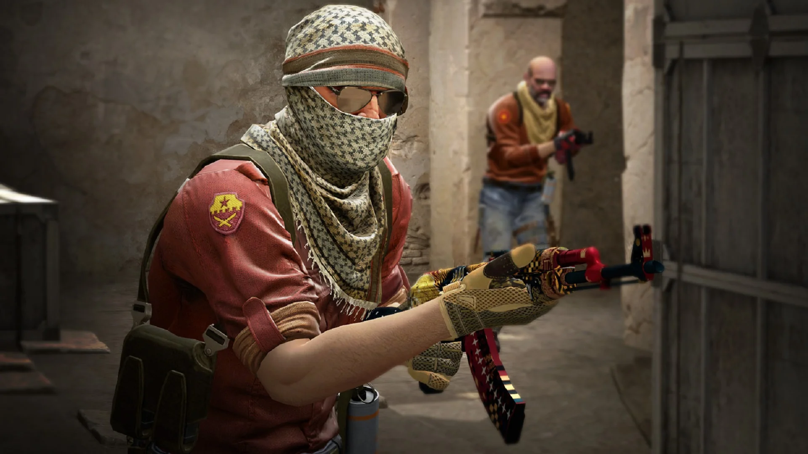
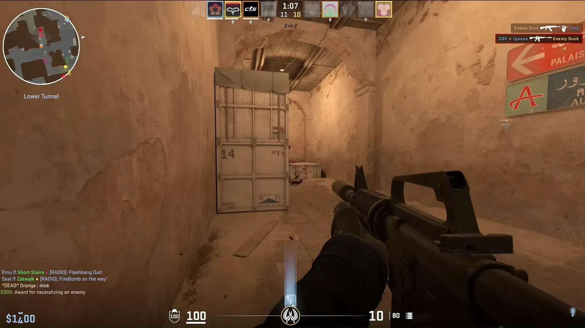
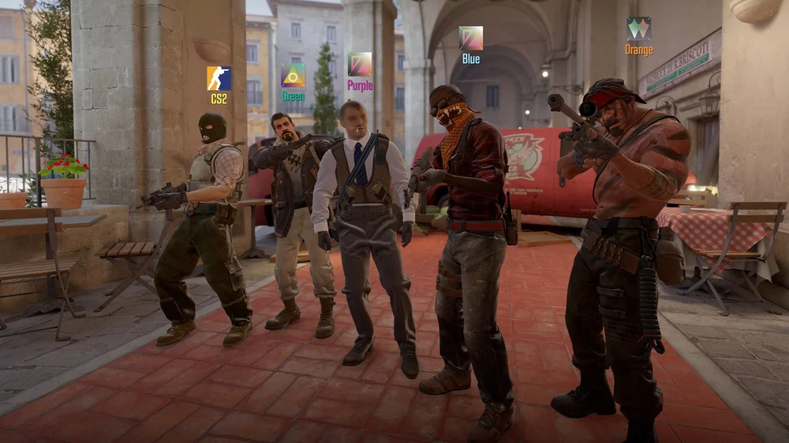
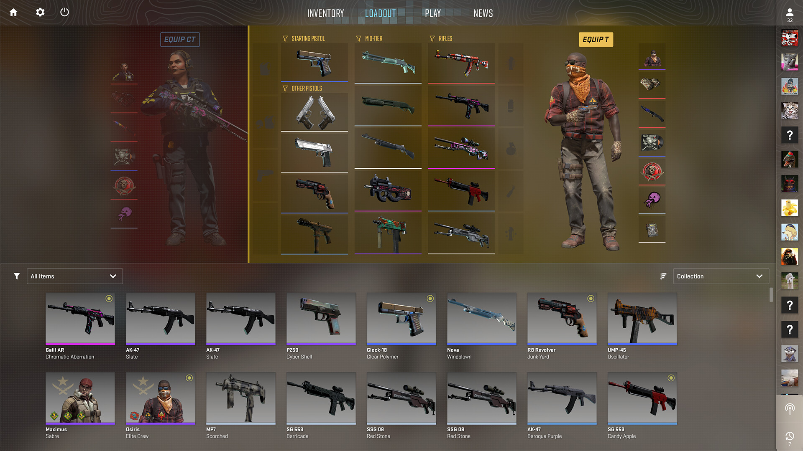
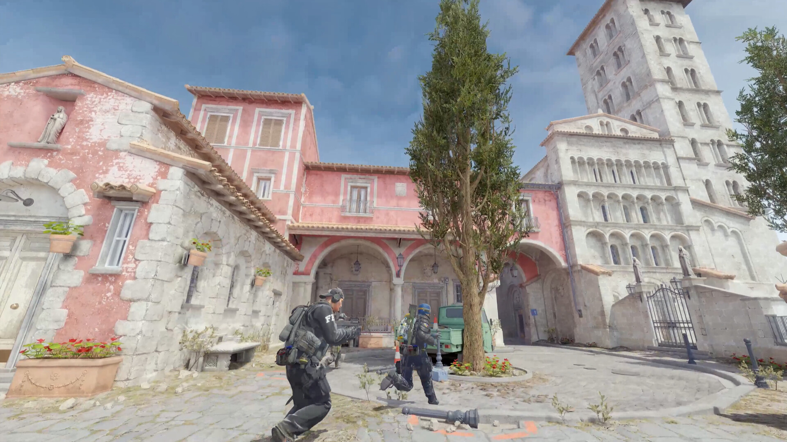

Counter-Strike é uma série de jogos de tiro táticos em primeira pessoa (FPS) baseados em equipes, onde os jogadores competem em partidas online entre Terroristas e Contra-Terroristas. A jogabilidade envolve completar objetivos como plantar ou desarmar bombas, ganhar dinheiro para comprar armas e equipamentos a cada rodada e usar estratégia para derrotar o time adversário



🎮 Principais Novidades e Jogabilidade
O CS2 manteve a jogabilidade central (Terroristas vs. Contra-Terroristas, com rodadas baseadas em objetivos), mas introduziu mudanças técnicas e visuais significativas:
1. Motor Gráfico Source 2:
Proporciona gráficos, iluminação, reflexos e efeitos visuais muito mais realistas e detalhados. Inventário Mantido: Seu arsenal inteiro do CS:GO (skins, facas, luvas, etc.) foi transferido para o CS2 e se beneficia das novas melhorias visuais.
2. Granadas de Fumaça Dinâmicas:
A maior mudança tática. As granadas de fumaça agora são objetos volumétricos dinâmicos que interagem com o ambiente e com a jogabilidade. Interação Tática: Balas e granadas HE podem dispersar ou abrir buracos temporariamente na fumaça, criando novas oportunidades e riscos estratégicos.
3. Arquitetura "Sub-tick" (Atualização entre Ticks):
Antes, as ações só eram processadas nos "ticks" definidos do servidor. Agora, o servidor sabe o instante exato em que você se move ou atira entre os ticks. Isso resulta em uma jogabilidade mais responsiva e precisa, onde o que você vê é o que acontece.
4. Mapas Aprimorados:
Mapas clássicos foram totalmente reconstruídos do zero (como Overpass), tiveram grandes melhorias de iluminação e fidelidade (como Nuke), ou apenas leves retoques (como Dust 2).
5. Sistema de Ranking e Modos:
Introduziu o Rating CS no modo Premier, que permite aos jogadores acompanharem seu desempenho em classificações globais e regionais. O jogo possui modos tradicionais como Competitivo, Casual, Deathmatch e Corrida Armada.
6. Áudio e Efeitos:
Sons e efeitos visuais foram refeitos para melhor qualidade e espacialização 3D, permitindo aos jogadores determinar melhor a direção e a distância dos sons no jogo.